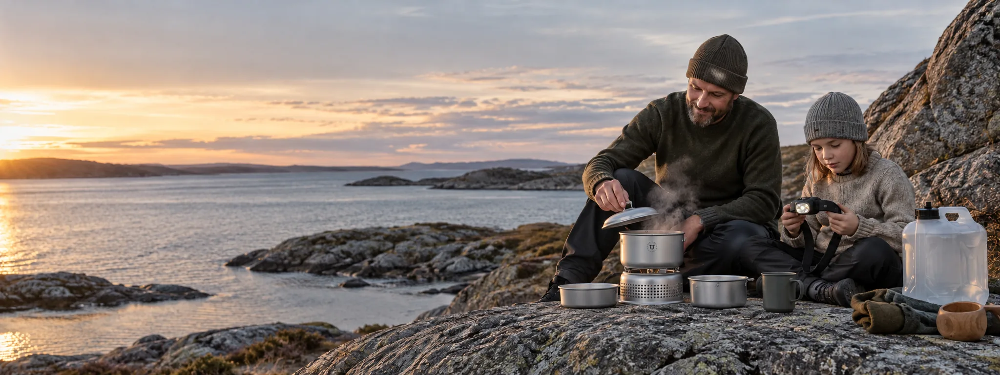
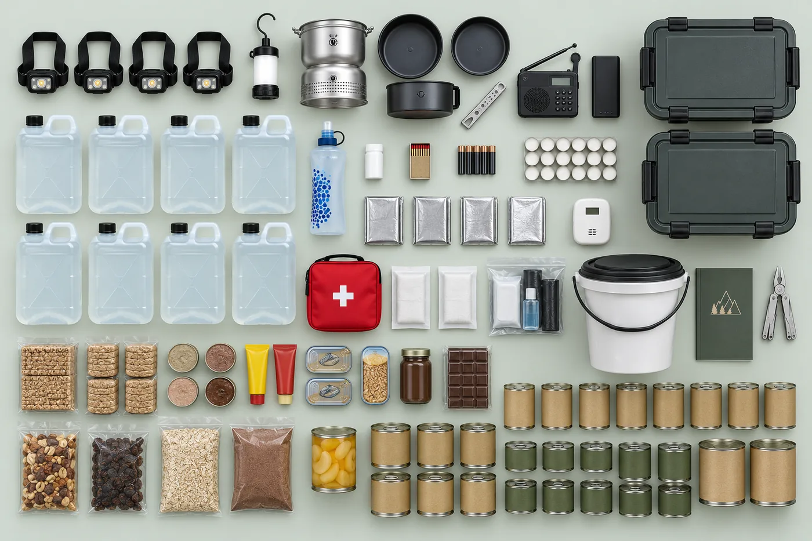

Beredskap for hele familien
Samme utstyr, bare nok av det.
Samme utstyr som dere ville tatt med på tur: Petzl, Trangia, Katadyn. Ingen nødrasjoner, ingen merker dere aldri har hørt om. Forskjellen er mengden – nok til alle som bor i huset, i sju døgn.
Komplett pakke · fire personer · vanlig mat – inkl. mva. Frakt kommer i tillegg.
Sett sammen esken din Se hva som ligger i den
Satt sammen etter DSBs råd om egenberedskap. Nødboks er et privat firma og er ikke tilknyttet eller godkjent av DSB.

Det er ikke dramatisk. Det er bare uvant.
Tre tall som er verdt å kjenne, med kilden oppgitt.
7 døgn
Så lenge bør en husstand klare seg selv, ifølge myndighetene. Rådet ble utvidet fra tre døgn i mai 2024.
dsb.no20 liter
Drikkevann per person for uka. Det skal dekke drikke, matlaging og hygiene. Det er den eneste mengden DSB tallfester.
dsb.no om vannDAB
Radioen må gå på batteri, sveiv eller solceller, og den må ha DAB. NRK P1 er beredskapskanalen, og FM er slått av på riksnett.
dsb.noHvorfor vi ikke selger billig
Utstyr som ligger ubrukt, kan du ikke stole på.
Den vanligste feilen i dette markedet er å fylle en kasse med det billigste som finnes, sette den i boden og håpe at den aldri åpnes.
Problemet er at en hodelykt du aldri har brukt, er en hodelykt du fomler med i mørket. Et stormkjøkken du aldri har tent, er noe du skal lære deg den kvelden strømmen er borte og barna er sultne. Beredskap som aldri berøres, er ikke beredskap. Det er en kasse med fremmede gjenstander.
Derfor velger vi utstyr du har lyst til å bruke. Lykten blir med på hyttetur. Stormkjøkkenet står på svaberget i juli. Vannfilteret tar du med på fjellet. Og når det virkelig gjelder, plukker du opp noe du kjenner i hånda.
Det koster mer. Til gjengjeld er det ikke penger som står og taper seg i en bod – det er utstyr du har glede av hver sommer, som tilfeldigvis også er det du trenger den ene uka du håper aldri kommer.
- Kjente merker med ettermarked Reservedeler og reparasjon, ikke importvarer uten ettermarked.
- Virker i norsk vinter Kulde, vått og mørkt. Et batteri som dør ved minus ti er ikke beredskap.
- Ti års levetid Utstyret skal overleve flere runder med matpåfyll.
- Har du det fra før, tar vi det ut Du skal ikke kjøpe en hodelykt til for å få resten av pakken.
Pakkebyggeren
Fem valg, så er esken deres.
Fortell oss hvem som bor hjemme. Vi regner ut mengdene, viser hele innholdslisten og prisen mens du velger. Ingenting skjules til kassen.
Dette ligger i esken
Har dere noe fra før, ta det ut i listen – da slipper dere å kjøpe det to ganger. Kategoriene følger DSBs egen sjekkliste, så du kan holde listen vår mot den offisielle linje for linje.
Har dere hund eller katt, legger vi inn fôr og eget vann til dem når du teller dem opp over.

Vanlig mat eller langtidsmat?
Det er ikke billig mot dyrt. Det er to ærlige veier, og de passer ulike hjem.
| Vanlig norsk mat | Langtidsmat | |
|---|---|---|
| Hva det er | Havregryn, hermetikk, knekkebrød, tørket frukt. Mat dere kjenner igjen. | Fire frysetørkede middager. Frokost er havregrøt, resten er den samme butikkmaten. |
| Spiser barna det? | Ja. Det er den samme maten som står i skapet ellers. | Som regel. Velg retter dere har smakt på tur først. |
| Holdbarhet | 1–2 år. Må byttes. | Flere år. Sjekk datoen på posen – tallene som sirkulerer i bransjen spriker. |
| Din jobb | Bytte maten når vi sier fra. Ta gjerne det gamle inn i skapet. | Nesten ingenting. Sett den bort og sjekk datoen av og til. |
| Krever | Lite. Mye kan spises kaldt rett fra boksen. | Kokende vann til de fire middagene – 3,7 dl per pose. Resten klarer seg uten. |
| Uten brennstoff | Rekker seks til sju døgn. Nesten alt kan spises kaldt. | Rekker seks til sju døgn. Bare de fire middagene krever koking. Byggeren viser tallet for din husstand. |
Vi sier ikke at langtidsmat er tryggere. Mat som står i skapet og faktisk blir spist, er også beredskap – og DSB anbefaler selv å ha litt ekstra av den maten du spiser til vanlig.
← Tilbake til byggerenSlik jobber vi
Fire ting du kan etterprøve, ikke fire løfter.
Utstyret skalerer med husstanden
Er dere seks, får dere seks hodelykter. Det er ikke en selvfølge i dette markedet: flere av de største leverer samme antall lykter, brennere og førstehjelpssett uansett hvor mange dere er.
Vi sier hva hver oppgradering koster
Premium betyr ikke dyrest. Der et dyrere produkt ikke gjør en reell forskjell, velger vi det billigere – og der vi går opp i pris, står begrunnelsen i innholdslisten, så du kan være uenig.
Full vannmengde, og en oppskrift på å fylle den
To 10-literskanner per person, altså nøyaktig de 20 literne DSB anbefaler. Vi valgte 10-liters framfor 20-liters med vilje: en full 20-literskanne veier 21 kilo og kan ikke bæres eller helles av et barn, en gravid eller en eldre – og det er ofte de som må hente sitt eget vann. Slik fyller du dem.
Utløpsdato på hver vare
Innholdslisten viser holdbarheten per vare og den korteste i pakken. Det er den som avgjør når påfyll trengs, og den vi varsler på.
CO-varsler i esken
Et kokeapparat i en mørk leilighet er en reell forgiftningsrisiko, og karbonmonoksid lukter ingenting. Ingen andre i dette markedet legger ved en CO-varsler. Det er den billigste varen i esken, og den eneste grunnen til at vi tør selge deg et kokeapparat.
Vi er ikke godkjent av noen
Nødboks er et privat firma. Vi følger DSBs offentlige råd, men vi er ikke tilknyttet DSB, og ingen myndighet har godkjent pakkene våre.
Dette selger vi ikke, men du bør ha det
Fem ting vi ikke tjener en krone på.
- Brennstoff til kokeapparatet.
Kjøp én gassboks på 450 gram per to personer – minimum to – hos Biltema,
Clas Ohlson, XXL eller Jula, rundt 140 kr stykket. Skrukartusj med
gjengeventil EN 417 passer.
Vi anbefaler gass framfor rødsprit, og grunnen er slukkingen: en gassflamme dør når du vrir av ventilen, mens en spritbrenner må kveles med lokk. Sølt brennende sprit renner, og spritflammen er nesten usynlig i dagslys – folk brenner seg på brennere de tror er slukket. Settet tar begge deler hvis du er uenig; rødsprit har den fordelen at den er lovlig å lagre i kjellerbod, der gass ikke er det.
Grunnen til at brennstoff ikke ligger i esken: gass er UN1950 og rødsprit er UN1170, og ingen av dem kan sendes som vanlig pakke. Konkurrentene sender brenner uten beholder og lar være å nevne det. Vi sier det her. - Medisinene dine. Ha minst sju dagers ekstra forsyning av det du bruker fast. Snakk med legen, og hent påfyll senest en uke før du går tom.
- Jodtabletter. Fås på apotek. Gjelder barn og voksne under 40, gravide og ammende – og skal bare tas etter beskjed fra myndighetene.
- Kontanter. Ha litt hjemme i små valører. Kortterminaler krever strøm og nett. DSB oppgir ingen sum; vurder den ut fra hvor mange dere er.
- En liste med telefonnumre på papir. Nødnummer, legevakt, veterinær, naboer. Mobilen kan være død når du trenger den.
- En avtale med naboen. Den som har vedovn, og den som har plass. Avtalen bør gjøres før noe skjer.
Spørsmål
Er dette godkjent av DSB eller myndighetene?
Nei. Ingen myndighet godkjenner beredskapspakker, og de som antyder noe annet strekker sannheten. Vi setter sammen pakkene etter DSBs offentlige råd, og viser i innholdslisten hvilket råd hver vare dekker, slik at du kan kontrollere det selv.
Hvordan fyller jeg kannene, og hvor lenge holder vannet?
Kannene sendes tomme. 80 liter vann veier 80 kilo, frakten ville kostet mer enn innholdet, og vannet i springen din er allerede drikkevann. Dette er DSBs egen framgangsmåte:
- Vask kannene med såpe og vann, og skyll godt.
- Fyll på vann og tilsett to korker klorin per 10 liter. La stå i minst 30 minutter.
- Tøm ut og skyll godt.
- Fyll helt fulle med kaldt vann fra springen – la vannet renne til det er kaldt.
- Lagre mørkt, kjølig og frostfritt, uten direkte sollys.
Rent vann på rene beholdere kan stå i årevis uten å bli farlig å drikke. Bytt det likevel én gang i året for smakens skyld – vi minner deg på det hvis du vil.
Rensetablettene er ikke til springvannet. De ligger der for tilfellet der kannene går tomme eller det kommer et kokevarsel, og du må ta vann fra en kilde du ikke stoler på. Tabletter desinfiserer mot bakterier og virus i klart vann; de fjerner ikke partikler, tungmetaller eller kjemisk forurensning.
Kan jeg bruke kokeapparatet innendørs?
Ikke i lukket rom. Verken gassbrenner eller spritbrenner er godkjent for innendørs bruk uten ventilasjon. Begge forbruker oksygen, og begge produserer karbonmonoksid ved ufullstendig forbrenning. CO er luktfritt, og de første symptomene ligner influensa – du merker ikke at du blir forgiftet.
Vi vet likevel at folk kommer til å koke mat inne når det er kaldt og mørkt. Derfor ligger det en CO-varsler i esken, og derfor sier vi det heller enn å la være: hold vinduet på gløtt, aldri kok mens du sover, og la varsleren stå i samme rom som apparatet.
Hvorfor følger det ikke brennstoff med?
Fordi det ikke kan sendes. Gass er klassifisert som UN1950 og rødsprit som UN1170 – begge er farlig gods, og ingen av dem går som vanlig pakke uten egen fraktavtale. Det gjelder alle i bransjen, ikke bare oss; forskjellen er at vi sier det. Under «dette selger vi ikke» står det nøyaktig hva du skal kjøpe, hvor mye, og hvorfor vi anbefaler gass.
Hva koster frakten?
Frakt kommer i tillegg til prisen og beregnes i kassen etter vekt og leveringssted. En komplett pakke til fire personer veier rundt 44 kilo fordelt på to kasser, og det er ærligere å vise den kostnaden enn å legge den inn i varelinjene og kalle det fri frakt.
Hvor mye mat er «nok»?
DSB oppgir ingen kalorimengde – de sier bare «nok mat for en uke». Vi dimensjonerer etter et normalt daglig energibehov og viser regnestykket i innholdslisten. Det er vår dimensjonering, ikke DSBs anbefaling, og vi skriver det slik fordi resten av bransjen presenterer egne tall som om de var offentlige råd.
Er abonnementet en binding?
Nei. Vi sender en e-post før maten går ut. Du svarer ja eller nei, og kan avslutte når som helst. Velger du langtidsmat er abonnementet lite relevant, og da sier vi det i stedet for å selge det til deg.
Kan jeg sette sammen dette selv?
Ja, og det bør du gjøre hvis du har tid og lyst – det blir billigere. DSBs egen sjekkliste er gratis og fullstendig. Vi selger at det er gjort ferdig, riktig dimensjonert, og at noen holder styr på datoene.